WHEN THE ROOF OPENED · CHAPTER ONE
A Bowl for
the Late Watch
Thirty-seven pages from the world humanity will one day meet.
Browse all 37 pages
Small screen? Open a page for its larger image.

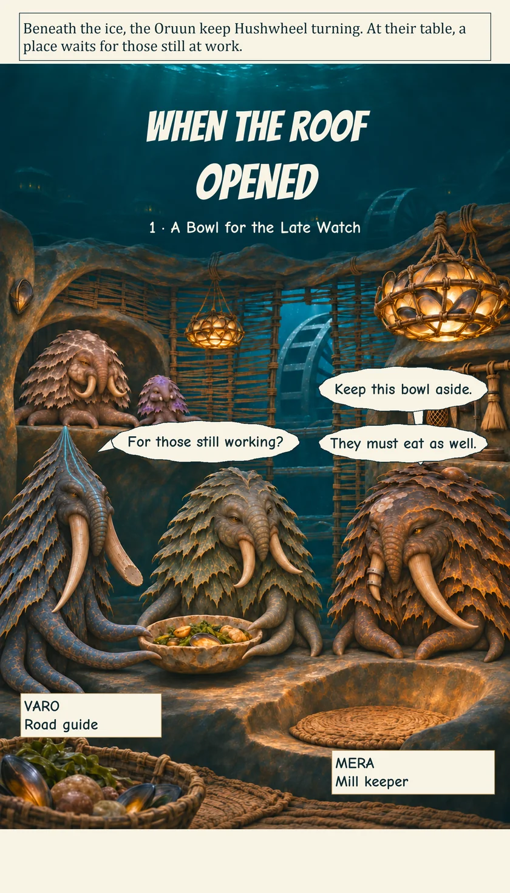
Page 1: read the words
Beneath the ice, the Oruun keep Hushwheel turning. At their table, a place waits for those still at work.
WHEN THE ROOF
OPENED
1 · A Bowl for the Late Watch
Keep this bowl aside.
For those still working?
They must eat as well.
VARO - Road guide
MERA - Mill keeper

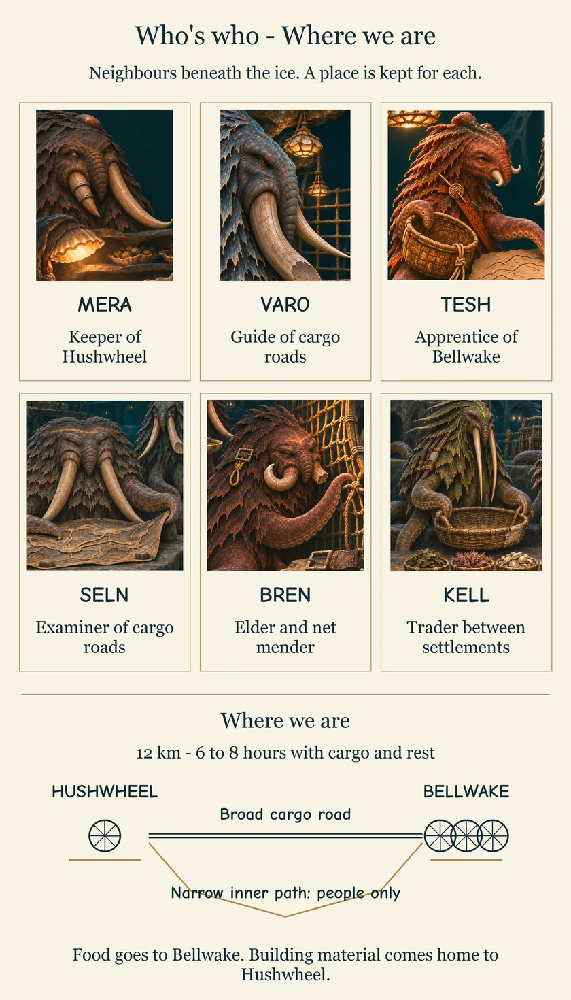
Page 2: read the words
Who's who - Where we are
Neighbours beneath the ice. A place is kept for each.
MERA
Keeper of Hushwheel
VARO
Guide of cargo roads
TESH
Apprentice of Bellwake
SELN
Examiner of cargo roads
BREN
Elder and net mender
KELL
Trader between settlements
Where we are
12 km - 6 to 8 hours with cargo and rest
HUSHWHEEL
BELLWAKE
Broad cargo road
Narrow inner path: people only
Food goes to Bellwake. Building material comes home to Hushwheel.

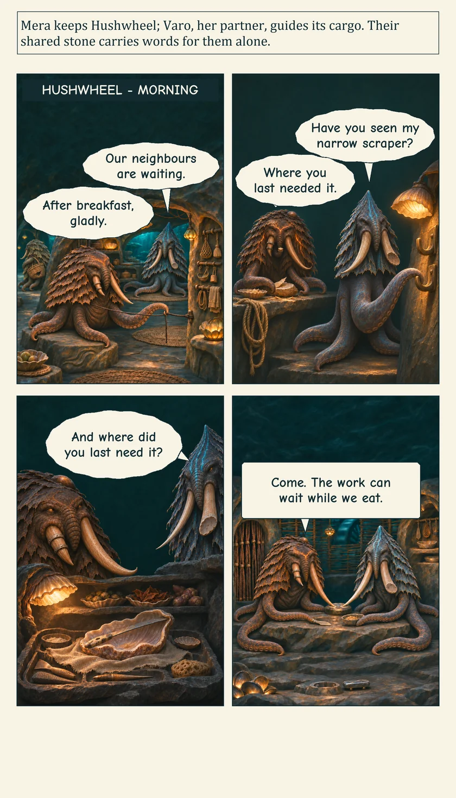
Page 3: read the words
Mera keeps Hushwheel; Varo, her partner, guides its cargo. Their shared stone carries words for them alone.
HUSHWHEEL - MORNING
Our neighbours are waiting.
After breakfast, gladly.
Have you seen my narrow scraper?
Where you last needed it.
And where did you last need it?
Come. The work can wait while we eat.

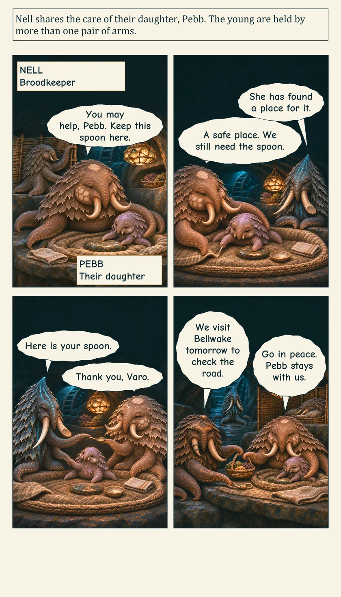
Page 4: read the words
Nell shares the care of their daughter, Pebb. The young are held by more than one pair of arms.
NELL - Broodkeeper
You may help, Pebb. Keep this spoon here.
PEBB - Their daughter
She has found a place for it.
A safe place. We still need the spoon.
Here is your spoon.
Thank you, Varo.
We visit Bellwake tomorrow to check the road.
Go in peace. Pebb stays with us.

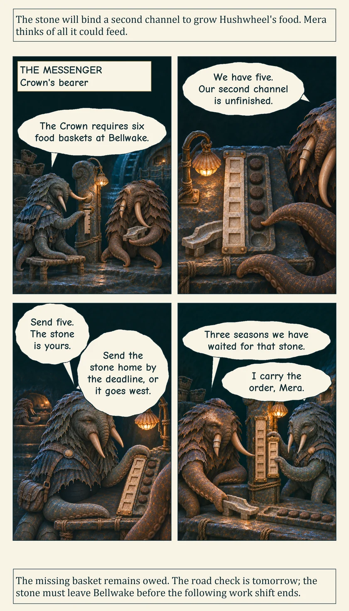
Page 5: read the words
The stone will bind a second channel to grow Hushwheel's food. Mera thinks of all it could feed.
THE MESSENGER - Crown's bearer
The Crown requires six food baskets at Bellwake.
We have five. Our second channel is unfinished.
Send five. The stone is yours.
Send the stone home by the deadline, or it goes west.
Three seasons we have waited for that stone.
I carry the order, Mera.
The missing basket remains owed. The road check is tomorrow; the stone must leave Bellwake before the following work shift ends.

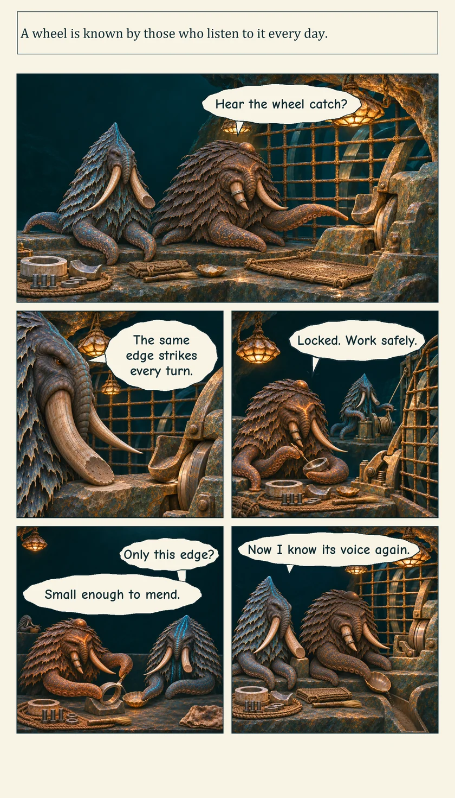
Page 6: read the words
A wheel is known by those who listen to it every day.
Hear the wheel catch?
The same edge strikes every turn.
Locked. Work safely.
Only this edge?
Small enough to mend.
Now I know its voice again.

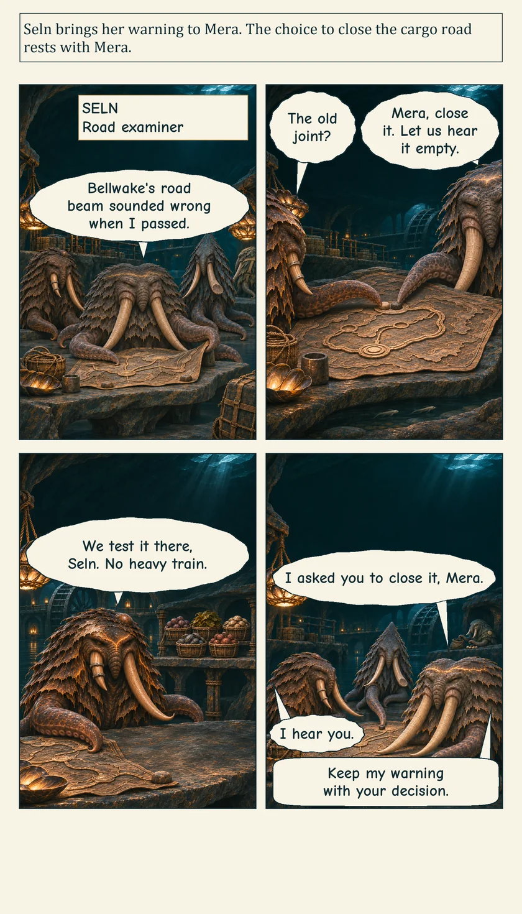
Page 7: read the words
Seln brings her warning to Mera. The choice to close the cargo road rests with Mera.
SELN - Road examiner
Bellwake's road beam sounded wrong when I passed.
The old joint?
Mera, close it. Let us hear it empty.
We test it there, Seln. No heavy train.
I asked you to close it, Mera.
I hear you.
Keep my warning with your decision.

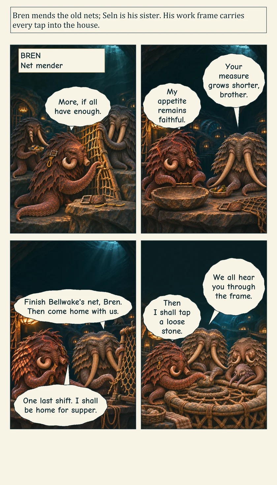
Page 8: read the words
Bren mends the old nets; Seln is his sister. His work frame carries every tap into the house.
BREN - Net mender
More, if all have enough.
Your measure grows shorter, brother.
My appetite remains faithful.
Finish Bellwake's net, Bren. Then come home with us.
One last shift. I shall be home for supper.
We all hear you through the frame.
Then I shall tap a loose stone.

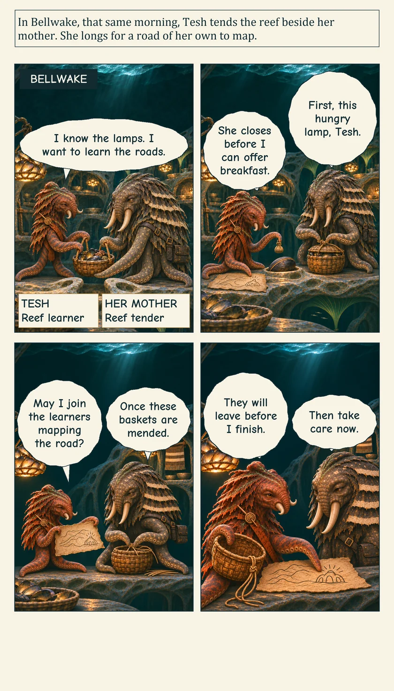
Page 9: read the words
In Bellwake, that same morning, Tesh tends the reef beside her mother. She longs for a road of her own to map.
BELLWAKE
I know the lamps. I want to learn the roads.
TESH - Reef learner
HER MOTHER - Reef tender
First, this hungry lamp, Tesh.
She closes before I can offer breakfast.
May I join the learners mapping the road?
Once these baskets are mended.
They will leave before I finish.
Then take care now.

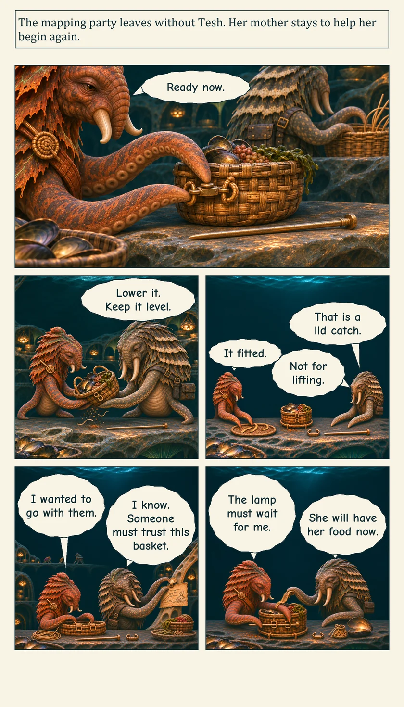
Page 10: read the words
The mapping party leaves without Tesh. Her mother stays to help her begin again.
Ready now.
Lower it. Keep it level.
That is a lid catch.
It fitted.
Not for lifting.
I wanted to go with them.
I know. Someone must trust this basket.
The lamp must wait for me.
She will have her food now.

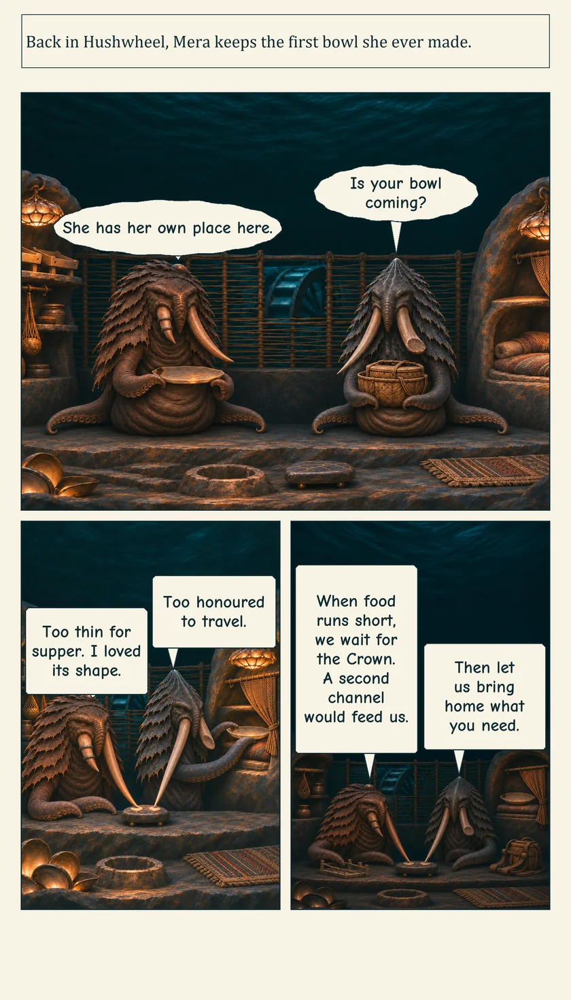
Page 11: read the words
Back in Hushwheel, Mera keeps the first bowl she ever made.
Is your bowl coming?
She has her own place here.
Too honoured to travel.
Too thin for supper. I loved its shape.
When food runs short, we wait for the Crown. A second channel would feed us.
Then let us bring home what you need.

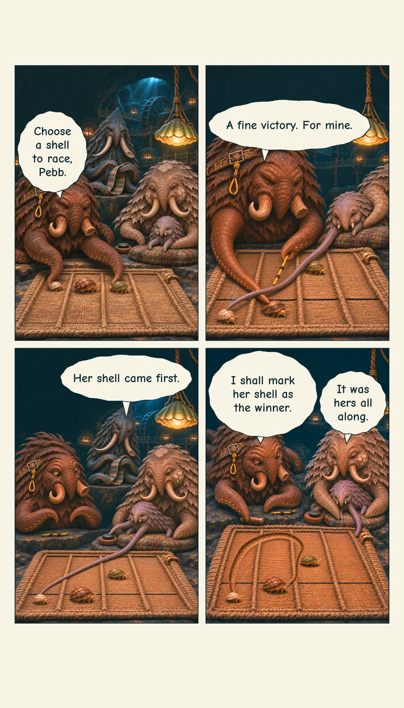
Page 12: read the words
Choose a shell to race, Pebb.
A fine victory. For mine.
Her shell came first.
I shall mark her shell as the winner.
It was hers all along.

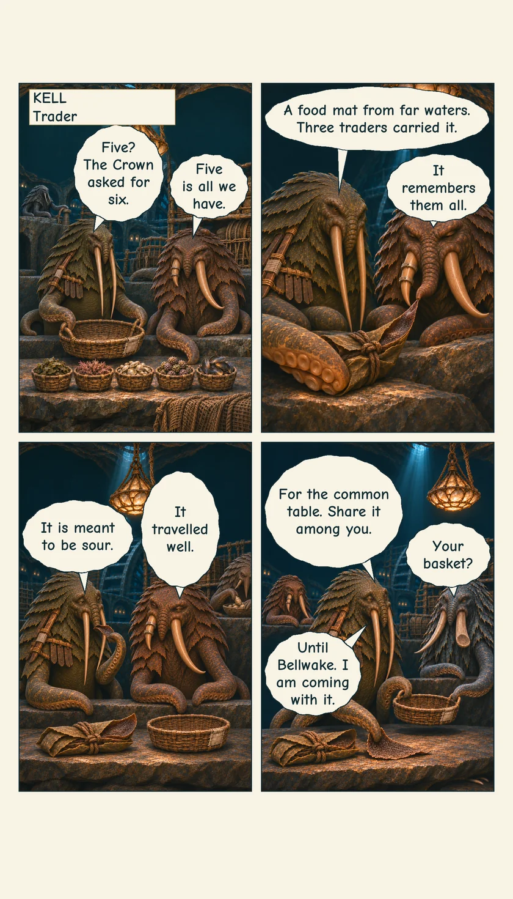
Page 13: read the words
KELL - Trader
Five? The Crown asked for six.
Five is all we have.
A food mat from far waters. Three traders carried it.
It remembers them all.
It is meant to be sour.
It travelled well.
For the common table. Share it among you.
Your basket?
Until Bellwake. I am coming with it.

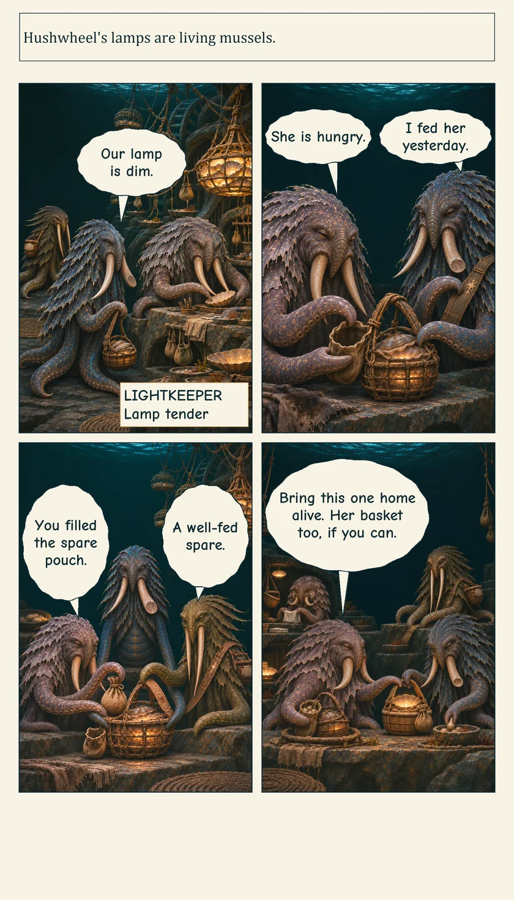
Page 14: read the words
Hushwheel's lamps are living mussels.
Our lamp is dim.
LIGHTKEEPER - Lamp tender
She is hungry.
I fed her yesterday.
You filled the spare pouch.
A well-fed spare.
Bring this one home alive. Her basket too, if you can.

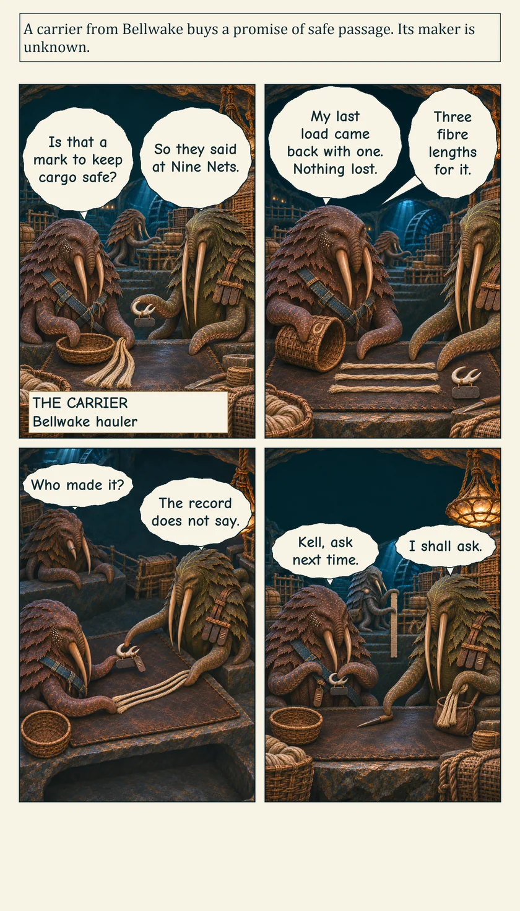
Page 15: read the words
A carrier from Bellwake buys a promise of safe passage. Its maker is unknown.
Is that a mark to keep cargo safe?
So they said at Nine Nets.
THE CARRIER - Bellwake hauler
My last load came back with one. Nothing lost.
Three fibre lengths for it.
Who made it?
The record does not say.
Kell, ask next time.
I shall ask.

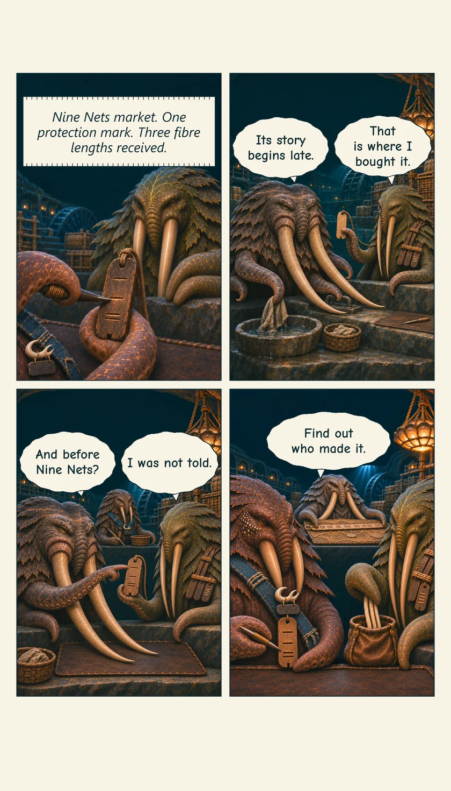
Page 16: read the words
Nine Nets market. One protection mark. Three fibre lengths received.
Its story begins late.
That is where I bought it.
And before Nine Nets?
I was not told.
Find out who made it.

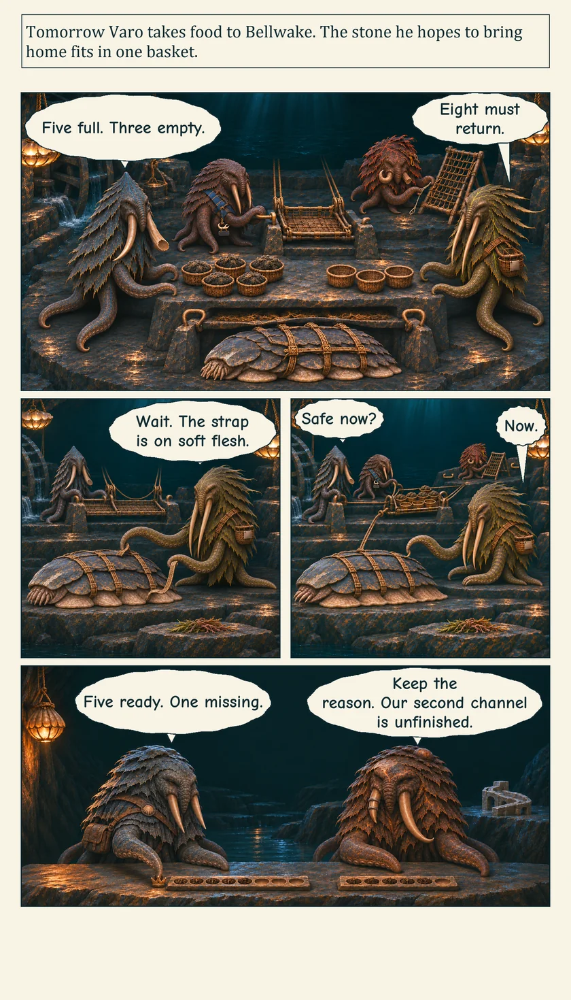
Page 17: read the words
Tomorrow Varo takes food to Bellwake. The stone he hopes to bring home fits in one basket.
Five full. Three empty.
Eight must return.
Wait. The strap is on soft flesh.
Safe now?
Now.
Five ready. One missing.
Keep the reason. Our second channel is unfinished.

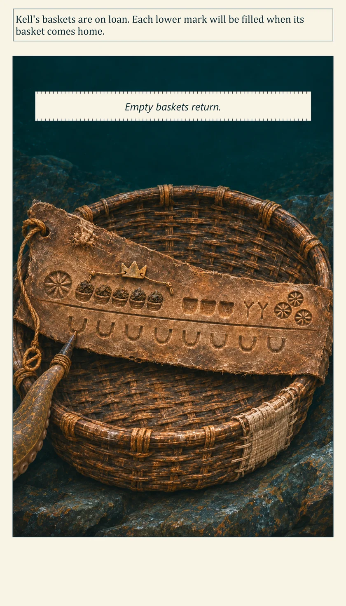
Page 18: read the words
Kell's baskets are on loan. Each lower mark will be filled when its basket comes home.
Empty baskets return.

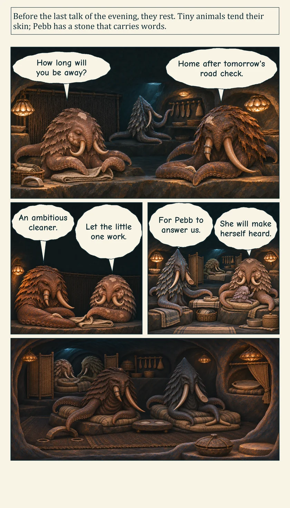
Page 19: read the words
Before the last talk of the evening, they rest. Tiny animals tend their skin; Pebb has a stone that carries words.
How long will you be away?
Home after tomorrow's road check.
An ambitious cleaner.
Let the little one work.
For Pebb to answer us.
She will make herself heard.

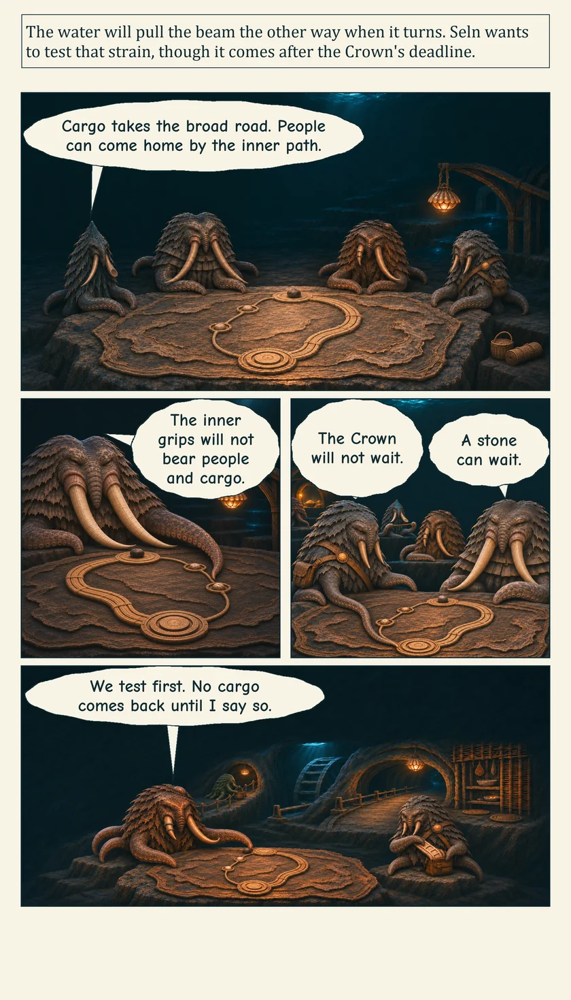
Page 20: read the words
The water will pull the beam the other way when it turns. Seln wants to test that strain, though it comes after the Crown's deadline.
Cargo takes the broad road. People can come home by the inner path.
The inner grips will not bear people and cargo.
The Crown will not wait.
A stone can wait.
We test first. No cargo comes back until I say so.

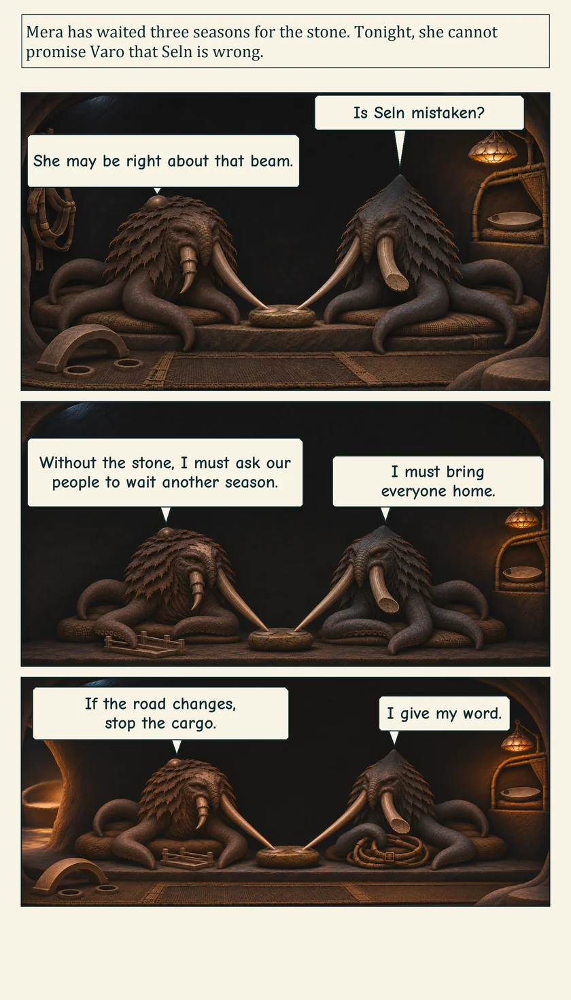
Page 21: read the words
Mera has waited three seasons for the stone. Tonight, she cannot promise Varo that Seln is wrong.
Is Seln mistaken?
She may be right about that beam.
Without the stone, I must ask our people to wait another season.
I must bring everyone home.
If the road changes, stop the cargo.
I give my word.

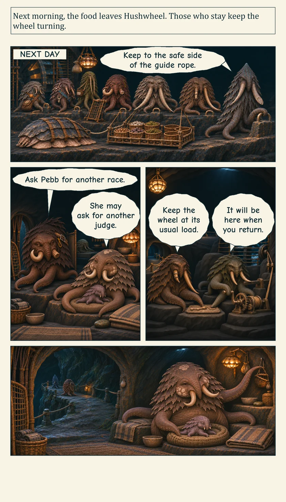
Page 22: read the words
Next morning, the food leaves Hushwheel. Those who stay keep the wheel turning.
NEXT DAY
Keep to the safe side of the guide rope.
Ask Pebb for another race.
She may ask for another judge.
Keep the wheel at its usual load.
It will be here when you return.

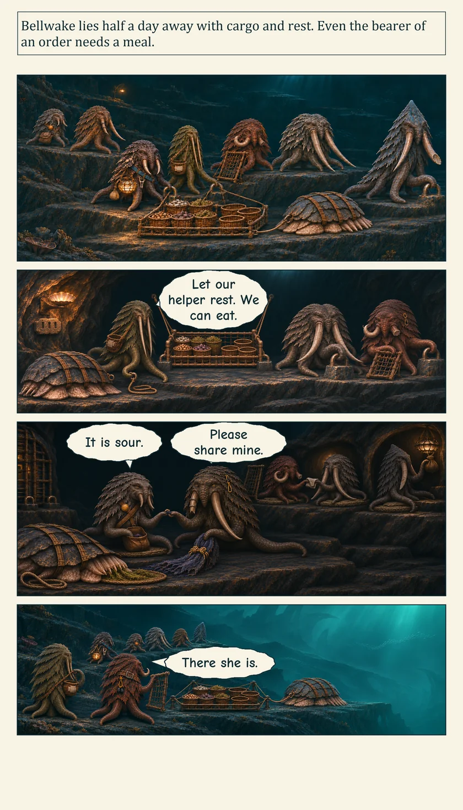
Page 23: read the words
Bellwake lies half a day away with cargo and rest. Even the bearer of an order needs a meal.
Let our helper rest. We can eat.
It is sour.
Please share mine.
There she is.

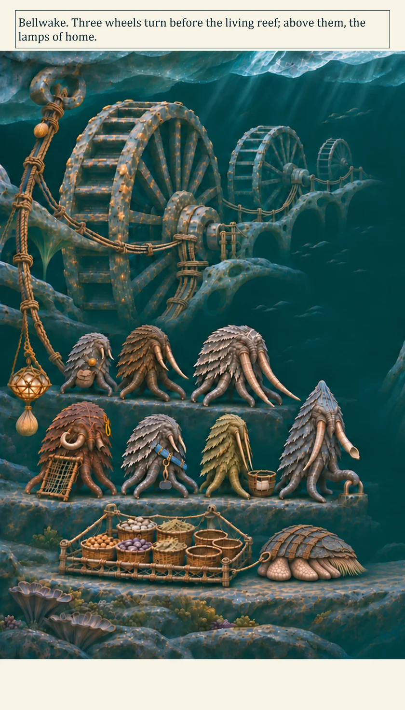
Page 24: read the words
Bellwake. Three wheels turn before the living reef; above them, the lamps of home.

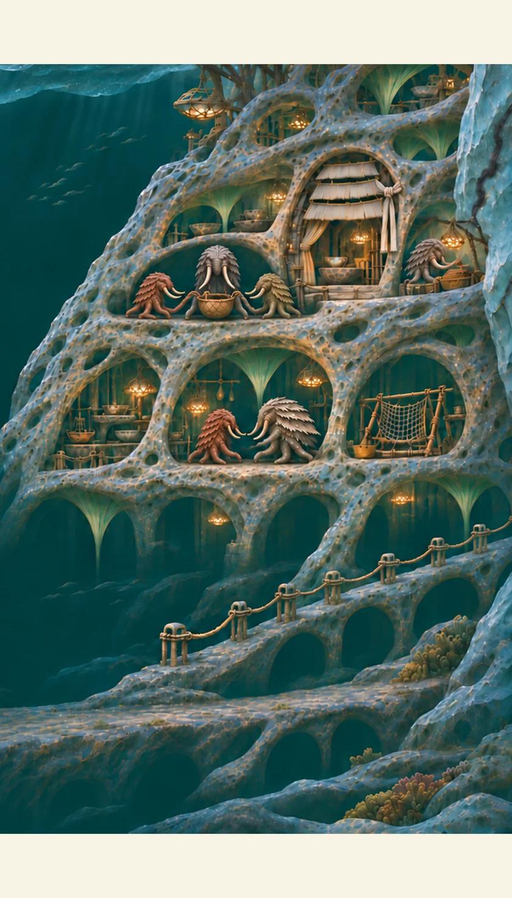
Page 25: read the words

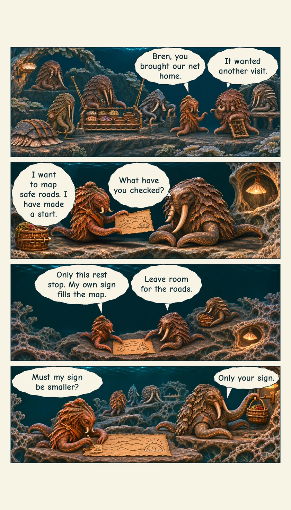
Page 26: read the words
Bren, you brought our net home.
It wanted another visit.
I want to map safe roads. I have made a start.
What have you checked?
Only this rest stop. My own sign fills the map.
Leave room for the roads.
Must my sign be smaller?
Only your sign.

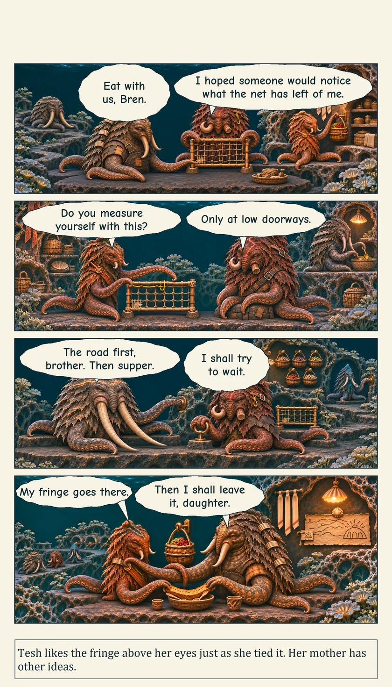
Page 27: read the words
Eat with us, Bren.
I hoped someone would notice what the net has left of me.
Do you measure yourself with this?
Only at low doorways.
The road first, brother. Then supper.
I shall try to wait.
My fringe goes there.
Then I shall leave it, daughter.
Tesh likes the fringe above her eyes just as she tied it. Her mother has other ideas.

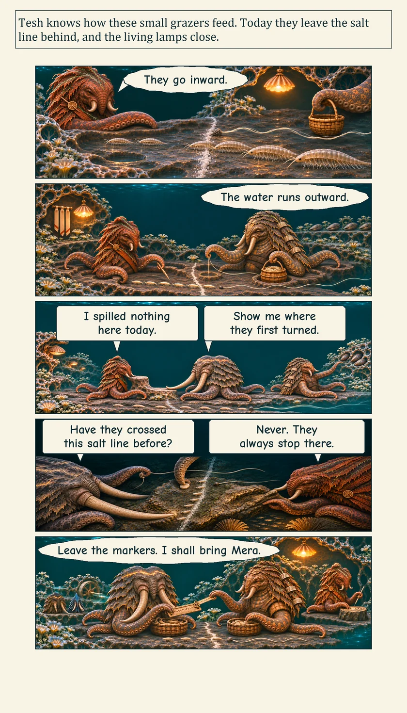
Page 28: read the words
Tesh knows how these small grazers feed. Today they leave the salt line behind, and the living lamps close.
They go inward.
The water runs outward.
I spilled nothing here today.
Show me where they first turned.
Have they crossed this salt line before?
Never. They always stop there.
Leave the markers. I shall bring Mera.

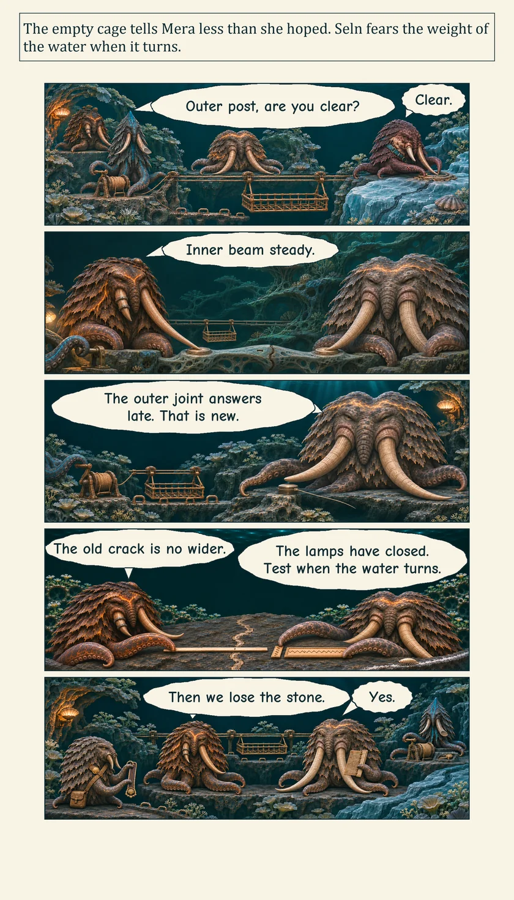
Page 29: read the words
The empty cage tells Mera less than she hoped. Seln fears the weight of the water when it turns.
Outer post, are you clear?
Clear.
Inner beam steady.
The outer joint answers late. That is new.
The old crack is no wider.
The lamps have closed. Test when the water turns.
Then we lose the stone.
Yes.

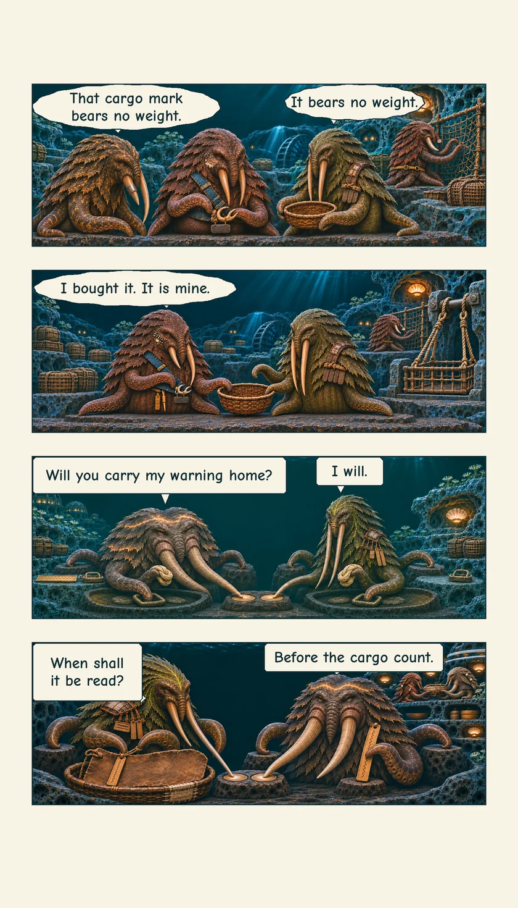
Page 30: read the words
That cargo mark bears no weight.
It bears no weight.
I bought it. It is mine.
Will you carry my warning home?
I will.
When shall it be read?
Before the cargo count.

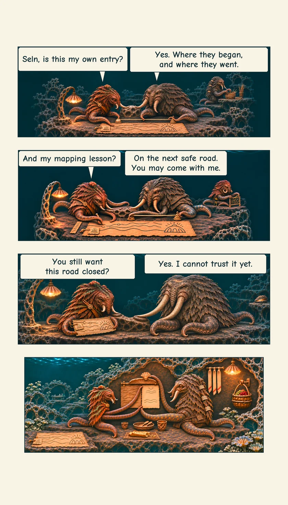
Page 31: read the words
Seln, is this my own entry?
Yes. Where they began, and where they went.
And my mapping lesson?
On the next safe road. You may come with me.
You still want this road closed?
Yes. I cannot trust it yet.

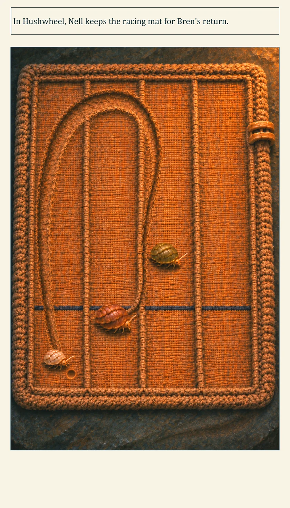
Page 32: read the words
In Hushwheel, Nell keeps the racing mat for Bren's return.

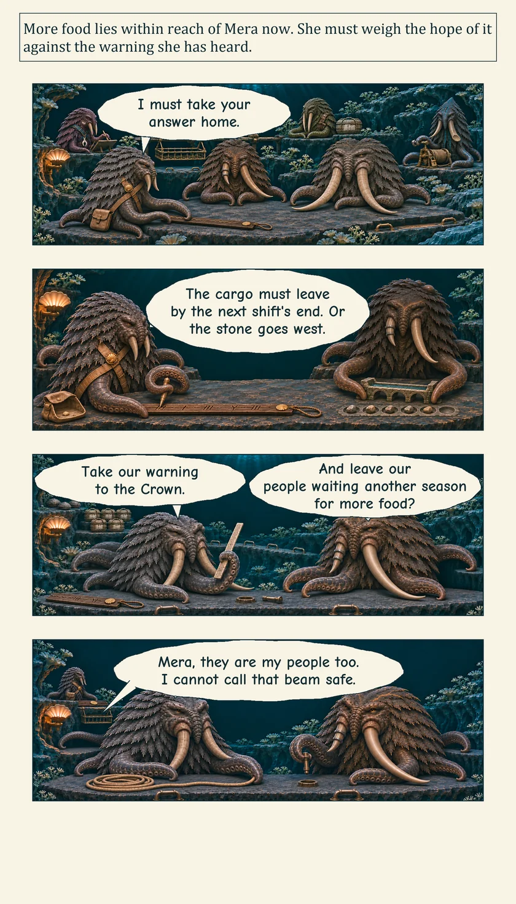
Page 33: read the words
More food lies within reach of Mera now. She must weigh the hope of it against the warning she has heard.
I must take your answer home.
The cargo must leave by the next shift's end. Or the stone goes west.
Take our warning to the Crown.
And leave our people waiting another season for more food?
Mera, they are my people too. I cannot call that beam safe.

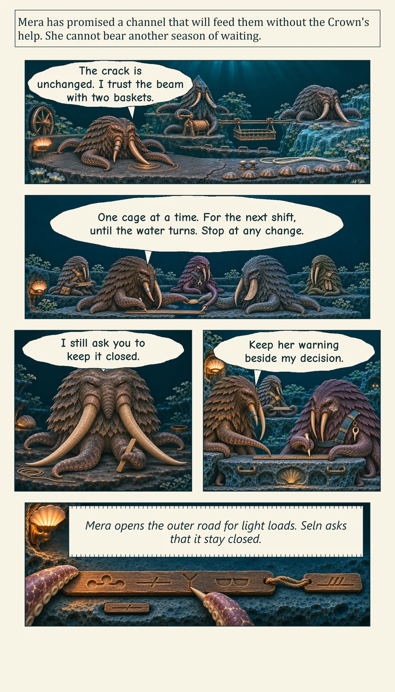
Page 34: read the words
Mera has promised a channel that will feed them without the Crown's help. She cannot bear another season of waiting.
The crack is unchanged. I trust the beam with two baskets.
One cage at a time. For the next shift, until the water turns. Stop at any change.
I still ask you to keep it closed.
Keep her warning beside my decision.
Mera opens the outer road for light loads. Seln asks that it stay closed.

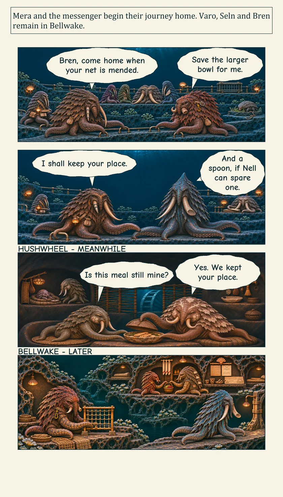
Page 35: read the words
Mera and the messenger begin their journey home. Varo, Seln and Bren remain in Bellwake.
Bren, come home when your net is mended.
Save the larger bowl for me.
I shall keep your place.
And a spoon, if Nell can spare one.
HUSHWHEEL - MEANWHILE
Is this meal still mine?
Yes. We kept your place.
BELLWAKE - LATER

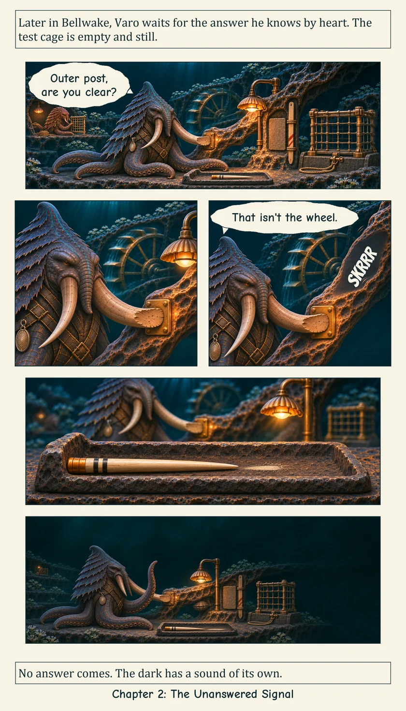
Page 36: read the words
Later in Bellwake, Varo waits for the answer he knows by heart. The test cage is empty and still.
Outer post, are you clear?
SKRRR
That isn't the wheel.
No answer comes. The dark has a sound of its own.
Chapter 2: The Unanswered Signal

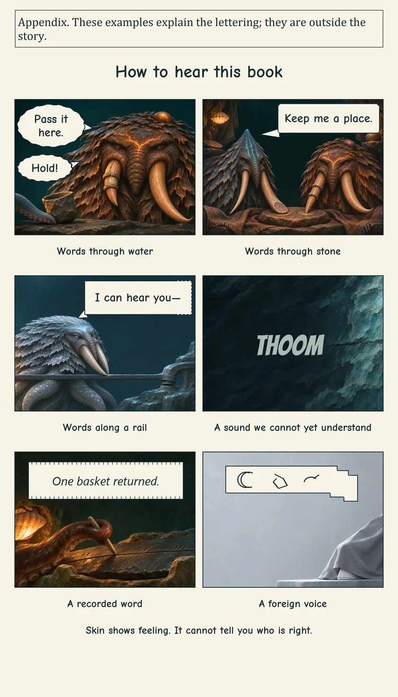
Page 37: read the words
Appendix. These examples explain the lettering; they are outside the story.
How to hear this book
Pass it here.
Hold!
Words through water
Keep me a place.
Words through stone
I can hear you—
Words along a rail
THOOM
A sound we cannot yet understand
One basket returned.
A recorded word
A foreign voice
Skin shows feeling. It cannot tell you who is right.